측량및지형공간정보기사 (2020-08-22 기출문제)
1과목: 측지학 및 위성측위시스템
1. 관측자가 이동국(관측점)의 GNSS만을 운용하며, 기준국(GNSS 상시관측소)들로부터 생성된 관측오차정보 데이터를 무선인터넷으로 수신받아 실시간 정밀위치 측정을 수행하는 GNSS측량 방식은?
- 정지측량
- 네트워크 RTK측량
- 이동측량
- Fast-static측량
(정답률: 83%)

2. 천문좌표계에서 어떤 시각의 별의 위치를 적경(a)과 직위(δ)로 나타내는 좌표는?
- 지평좌표
- 황도좌표
- 적도좌표
- 시각좌표
(정답률: 65%)
3. GPS 신호의 기본 주파수는 얼마인가?
- 1.023MHz
- 10.23MHz
- 102.3MHz
- 1023MHz
(정답률: 76%)
4. 우리나라의 표고기준에 관한 설명 중 틀린 것은?
- 다년간 조석 관측한 결과를 평균 조정한 평균해수면을 이용하여 그 위치를 지상에 영구표석으로 설치하여 수준원점으로 삼았다.
- 우리나라의 수준원점의 표고는 26.6871m이다.
- 해저수심은 평균최고 만조면을 기준으로 한다.
- 우리나라 수준원점은 인하공업전문대학 내에 있다.
(정답률: 80%)
5. GPS 위성의 궤도 형태로 옳은 것은?
- 타원
- 쌍곡선
- 포물선
- 8자 형태
(정답률: 78%)
6. GPS 신호에서 C/A 코드는 1.023Mbps로 이루어져 있다. GPS 신호의 전파 속도를 200000km/s로 가정 했을 때 코드 1bit 사이의 간격은 약 몇 m인가?
- 약 1.96m
- 약 19.6m
- 약 196m
- 약 1960m
(정답률: 58%)
7. 지구의 공전에 의한 현상으로 옳은 것은?
- 태양의 남중고도의 변화가 생긴다.
- 밤과 낮이 생긴다.
- 조석현상이 생긴다.
- 운동하는 물체에 전향력이 생긴다.
(정답률: 68%)
8. 항정선(rhumb line)에 대한 설명으로 틀린 것은?
- 자오선과 항상 일정한 각도를 유지하는 지표선이다.
- 방위각이 일정한 등방위선이다.
- 한 점에서 출발한 항정선은 나선형의 곡선을 그리게 된다.
- 항정선은 보통 평행권과 일치하므로 등위도선이라고도 한다.
(정답률: 54%)
9. 다음 중 중력보정에 속하지 않는 것은?
- 고도보정
- 아이소스타시보정
- 경도보정
- 무게보정
(정답률: 58%)
10. 구면삼각형의 면적이 1377km2, 지구의 곡선반지름이 6370km일 때 구과량은?
- 7“
- 16”
- 23“
- 30”
(정답률: 74%)
11. UTM좌표계에 대한 설명으로 옳은 것은?
- 각 구역은 서쪽방향으로 10°간격으로 1부터 번호를 붙인다.
- 지구 전체를 경도 6°씩 60구역으로 나눈다.
- 위도는 6° 간격으로 남북으로 20등분하여 나눈다.
- 위도 80°이상의 양극지역의 좌표를 표시하기 위한 좌표계이다.
(정답률: 79%)
12. 중력이상에 대한 설명 중 옳은 것은?
- 실측 중력값과 이론 중력값은 일반적으로 일치하는 경우가 많다.
- 중력이상은 실측 중력값에서 이론 중력값을 뺀 값을 말한다.
- 중력측정은 높이 측정에만 이용된다.
- 후리에어 보정은 지형보정, 고도보정을 한 후 관측점의 위도에 따라 정해지는 표준중력을 뺀 값이다.
(정답률: 70%)
13. 지구의 반지름이 6370km이고, 지구를 평면이라고 가정할 때 거리 오차의 정밀도가 1/106이면 허용 거리오차는?
- 10.7m
- 6.3m
- 2.2m
- 0.1m
(정답률: 61%)
14. GNSS의 오차요인 중에서 DGPS기법으로 상쇄되는 오차가 아닌 것은?
- 위성의 궤도 정보 오차
- 전리층에 의한 신호지연
- 대류권에 의한 신호지연
- 전파의 간섭
(정답률: 68%)
15. 지자기에 대한 설명으로 옳지 않은 것은?
- 지자기는 스칼라양이다.
- 편각은 지자기의 방향과 자오선과의 각이다.
- 복각은 지자기의 방향과 수평면과의 각이다.
- 수평분력이란 수평면내에서의 자기장의 크기이다.
(정답률: 58%)
16. GPS의 공식 기준좌표계는?
- ITRS
- ITRF
- GRS80
- WGS84
(정답률: 79%)
17. 통합기준점 설치를 위한 GPS 기준점 측량 시 연속 관측 시간은?
- 1시간
- 2시간
- 4시간
- 8시간
(정답률: 73%)
18. GNSS 간섭측위 방법 중 위성 시계오차와 수신기 시계오차를 상쇄시킬 수 있고 관측 시간이 길지만 모호징수(ambiguity)가 소거될 수 있는 반송파 위상 조합 방법은?
- 수신기간 단일차분위상차
- 위성간 단일차분위상차
- 이중차분위상차
- 삼중차분위상차
(정답률: 77%)
19. GNSS 위성측위에서 3차원 위치결정에 필요한 최소 위성 수는?
- 1개
- 2개
- 4개
- 6개
(정답률: 80%)
20. 지진파의 종류가 아닌 것은?
- P파
- L파
- S파
- V파
(정답률: 79%)
2과목: 응용측량
21. 노선측량의 작업순서로 옳은 것은?
- 실시설계측량-노선선정-계획조사측량-용지측량-세부측량-공사측량
- 노선선정-계획조사측량-용지측량-세부측량-실시설계측량-공사측량
- 실시설계측량-용지측량-노선선정-계획조사측량-세부측량-공사측량
- 노선선정-계획조사측량-실시설계측량-세부측량-용지측량-공사측량
(정답률: 53%)
22. 터널 내 중심선 측량과 가장 거리가 먼 것은?
- 중심선 도입측량과 중심말뚝 설치
- 터널 내 고서측량
- 터널변형 측정
- 터널 내 곡선설치
(정답률: 51%)
23. 노선의 종단면도에 계획선을 계획할 때 고려사항에 대한 설명으로 옳지 않은 것은?
- 계획경사는 요구에 맞도록 설치한다.
- 절토는 성토와 대략 같게 되도록 한다.
- 경사와 곡선은 가능한 병설하도록 한다.
- 절토는 성토로 유용할 수 있도록 운반거리를 고려한다.
(정답률: 69%)
24. 도로계획선의 설정을 위해 중심선을 따라 20m 간격으로 종단측량을 실시한 결과가 표와 같다. 측점 No.1을 시점으로 하고 No.5를 종점으로 하는 도로계획선의 기울기와 No.3의 절+성토고는?
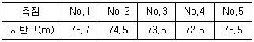
- 기울기 = 0.8%, 절토고 = 2.25m
- 기울기 = 0.8%, 성토고 = 2.25m
- 기울기 = 1%, 절토고 = 2.6m
- 기울기 = 1%, 성토고 = 2.6m
(정답률: 38%)
25. 노선측량에서 곡선반지름 200m의 단곡선에서 갠트가 0.38m이었다면 노선의 설계속도는? (단, 레일간격 D=1.067m)
- 26.42km/h
- 72.21km/h
- 95.11km/h
- 158.52km/h
(정답률: 45%)
26. 하천측량 중 유속관측에 관한 설명으로 옳지 않은 것은?
- 유속관측은 유속계에 의한 방법, 부자에 의한 방법, 하천기울기를 이용한 방법 등이 있다.
- 관측 장소의 상·하류 유로는 일정한 단면을 갖고 있으며 관측이 편리한 곳을 선정하여 관측한다.
- 수위의 변화에 의해 하천 횡단면 형상이 급변하지 않고 토질이 양호한 곳을 선정하여 관측한다.
- 곡류부로서 흐름의 변화가 다양하고, 하상의 요철이 많은 곳을 선정하여 관측한다.
(정답률: 75%)
27. 유토곡선의 특성에 대한 설명으로 옳지 않은 것은?
- 곡선이 하향인 구간은 절토구간이고, 상향인 구간은 성토구간이다.
- 곡선의 저점은 성토에서 절토로, 정점은 절토에서 성토로 바뀌는 점이다.
- 평행선(기선)에서 곡선의 지점이나 정점까지 종거는 절토에서 성토로 운반되는 전토량을 의미한다.
- 유토곡선과 평행선(기선)의 교차점은 성토량과 절토량이 거의 같은 평형상태를 나타낸다.
(정답률: 53%)
28. 하천측량을 실시하는 주요 목적으로 가장 적합한 것은?
- 하천개수공사나 하천공작물의 계획, 설계, 시공에 필요한 자료를 얻기 위하여
- 하천개수공사와 관련된 공사비를 산출하기 위하여
- 하천의 수위, 경사 등을 알기 위하여
- 하천의 종·횡단면도를 얻기 위하여
(정답률: 54%)
29. 다음 중 3점법에 의한 유속 곗한을 위하여 관측하여야 할 수심 위치가 아닌 것은? (단, 수심은 수면으로부터 H이다.)
- 0.2H
- 0.4H
- 0.6H
- 0.8H
(정답률: 69%)
30. 하천측량에 대한 설명으로 옳지 않은 것은?
- 평균수위는 어떤 기간의 관측수위를 합하여 관측횟수로 나누어 평균한 수위이다.
- 하천 횡단면 직선 내 평균 유속을 구하는데 2점법을 사용하는 경우 수면으로부터 수심의 2/10, 8/10 지점의 유속을 과측하여 평균한다.
- 하천측량에 수준측량을 할 때의 거리표는 하천의 중심에 직각의 방향으로 설치하는 것을 원칙으로 한다.
- 수위관측소의 위치는 지천의 합류점 및 분류점으로 수위의 변화가 활발한 곳이 적당하다.
(정답률: 71%)
31. 터널 외 기준점 측량에 대한 설명으로 옳지 않은 것은?
- 터널입구 부근은 대개 지형이 나쁘고 좁은 장소가 많으므로 인조점을 설치한다.
- 측량의 정확도를 높이기 위해 터널 외 기준점 설치시 후시를 가능한 길게 잡는 것이 좋다.
- 고저측량용 기준점은 터널 입구 부근과 떨어진 곳에 2개소 이상 설치하는 것이 좋다.
- 터널 외 기준점 측량은 작업터널 완성 후 터널 내 단면 변형 관측을 위해 수행한다.
(정답률: 42%)
32. 터널 내 수준측량에서 지형이 급경사인 경우에 가장 적당한 방법은?
- 토털스테이션을 사용하는 방법
- 클리노미터에 의한 방법
- 기압계를 사용하는 방법
- 레벨을 사용하는 방법
(정답률: 61%)
33. 다음 중 수로측량의 종류가 아닌 것은?
- 항만측량
- 항로측량
- 지적측량
- 연안해역조사
(정답률: 65%)
34. 어떤 횡단면도의 도상면적이 29.8cm2이었다. 가로와 세로의 축척이 각각
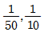
이라면 실제 면적은?- 1.49cm2
- 2.98cm2
- 7.45cm2
- 3.68cm2
(정답률: 46%)
35. 그림과 같이 200mm 하수관을 묻었을 때 측점 A의 관저계획고는 53.16m이고, AB구간의 설치 기울기는 1/200, BC구간의 설치기울기는 1/250일 때, 측점 C의 관저계획고는?
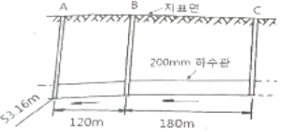
- 54.35m
- 54.48m
- 54.51m
- 54.54m
(정답률: 49%)
36. 해안선의 형상과 종별을 확인하여 토면화하기 위한 해안선의 기준은?
- 평균해수면
- 약최고고조면
- 약최저저조면
- 해저수심의 기준면
(정답률: 56%)
37. 그림과 같이 반지름 R-300m의 단곡선을 설치하기 위하여 P, Q 두 점간 거리(b)와 α,β의 두 각을 관측하였다. P점의 위치가 No.100+7.50m이라면 곡선시점 A의 위치는? (단, b=450.60m이고, α=38°15‘, β=80°30’이다.)
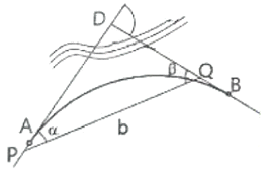
- No.99+15.50m
- No.100+7.64m
- No.100+21.50m
- No.101+3.52m
(정답률: 41%)
38. 그림과 같은 삼각형의 꼭지점 A로부터 밑변을 향해서 직선으로 m:n=2:8의 비율로 면적을 분할하려면 BD의 거리는? (단, BC=300m로 한다.)
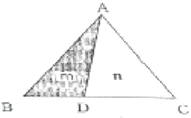
- 30m
- 60m
- 90m
- 120m
(정답률: 72%)
39. 종단곡선의 상향기울기가
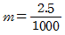
이고, 하향기울기가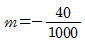
일 때 곡선반지름이 2000m이면 곡선길이(L)는?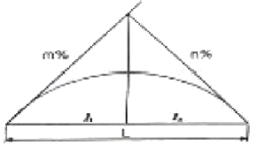
- 18.75m
- 42.5m
- 45.2m
- 85m
(정답률: 40%)
40. 수평거리를 동일한 정확도로 관측하여 1000m2의 면적에 대한 면적산정 오차가 ±0.1m2이하가 되도록 하려면 거리관측의 허용정확도는?
- 1/5000
- 1/10000
- 1/20000
- 1/25000
(정답률: 31%)
3과목: 사진측량 및 원격탐사
41. 횡접합점에 대한 설명으로 옳은 것은?
- 인접 스트립을 연결하기 위한 점이다.
- 지상측량을 실시하여 좌표를 구한다.
- 대공표지를 설치하여야 한다.
- 상호표정에 사용된다.
(정답률: 61%)
42. 사지의 주점(principal point)을 계산하기 위하여 직접적으로 이용되는 것은?
- 사진지표
- 초점거리
- 노출중심
- 사진의 번호
(정답률: 52%)
43. 항공사진에 대한 설명으로 틀린 것은?
- 연직사진이 아니면 도화할 수 없다.
- 산악지 같은 지형의 상은 변형되어 찍힌다.
- 촬영각도가 기울어지면 같은 사진내에서도 축척이 일정하지 않다.
- 주점, 연직점, 등각점의 특수 3점이 있다.
(정답률: 65%)
44. 원격탐사와 관련된 용어로 거리가 먼 것은?
- LANDSAT
- HRV
- VRS
- SPOT
(정답률: 50%)
45. 촬영고도 6350m, 사진(∣)의 주점기선길이가 67mm, 사진(∥)의 주점기선길이가 70mm일때 시차차가 1.37mm인 댐의 높이는?
- 147m
- 137m
- 127m
- 107m
(정답률: 60%)
46. 원격탐사(Remote Sensing)자료의 일반적인 처리 순서로 알맞은 것은?
- 분류처리-전처리-DB구축-GIS통합-자료수집-강조처리
- 분류처리-전처리-GIS통합-DB구축-자료수집-강조처리
- 자료수집-전처리-강조처리-분류처리-DB구축-GIS통합
- 자료수집-분류처리-강조처리-전처리-DB구축-GIS통합
(정답률: 60%)
47. 편위수정 조건이 아닌 것은?
- 샤임 플러그 조건
- 광학적 조건
- 로세다 조건
- 기하학적 조건
(정답률: 46%)
48. 초점거리 150mm인 항공사진 카메라를 사용하여 촬영경사 4.5°로 평지를 촬영하였을 때 사진에서 최대경사선상의 연직점과 주점간의 거리는?
- 6mm
- 12mm
- 18mm
- 24mm
(정답률: 45%)
49. 지형의 특성에 따라 서로 다른 밀도로 표고점을 취득하여 DEM을 생성하는 방법은?
- 격자 표고점 추출
- 점진적 표고점 추출
- 동적 표고점 추출
- 무작위 표고점 추출
(정답률: 50%)
50. 공면조건을 이용하여 결정할 수 있는 표정은?
- 내부표정
- 상호표정
- 절대표정
- 접합표정
(정답률: 44%)
51. 종중복도 70%, 횡중복도 40%일 때, 촬영 종기선 길이와 촬영 횡기선 길이의 비는?
- 7:4
- 4:7
- 2:1
- 1:2
(정답률: 55%)
52. 사진의 크기 23cm×23cm인 카메라로 촬영고도 1000m에서 촬영한 사진의 면적이 21.16km2이었다면 카메라의 초점거리는?
- 5cm
- 21cm
- 25cm
- 30cm
(정답률: 47%)
53. 인공위성의 영상과 같이 좁은 시야각으로 얻어진 영상의 투영은 어느 것에 가깝다고 볼 수 있는가?
- 정사투영
- 중심투영
- 사각투영
- 이중투영
(정답률: 63%)
54. 어느 모델의 상호표정 직후 X-방향의 기선길이 bx가 225.0mm일 때, 지상거리 471.0m 간격의 지상기준점 A, B에 대하여 모델상 거리가 398.9mm이었다면, 축척 1 : 1200으로 도화하기 위해서는 bx를 얼마로 수정하여야 하는가?
- 217.8mm
- 221.4mm
- 225.1mm
- 228.7mm
(정답률: 23%)
55. 사진 크기와 촬영고도가 같을 때, A카메라의 초점거리는 88mm, B카메라의 초점거리는 152mm라면 A카메라에 의한 촬영면적은? (단, B카메라에 의한 촬영면적 = S)
- 0.3S
- 0.6S
- 1.7S
- 3S
(정답률: 33%)
56. 아래와 같이 영상을 분석하기 위해 산림지역의 트레이닝 필드를 선정하였다. 트레이닝 필드로부터 취득되는 각 밴드의 통계값으로 옳은 것은?
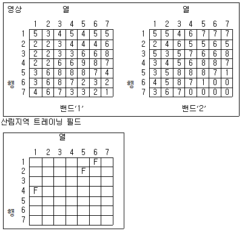
- 밴드 ‘1’의 화소값 : 최소값 = 1, 최대값 = 5
밴드 ‘2’의 화소값 : 최소값 = 3, 최대값 = 7 - 밴드 ‘1’의 화소값 : 최소값 = 2, 최대값 = 5
밴드 ‘2’의 화소값 : 최소값 = 2, 최대값 = 7 - 밴드 ‘1’의 화소값 : 최소값 = 2, 최대값 = 5
밴드 ‘2’의 화소값 : 최소값 = 3, 최대값 = 7 - 밴드 ‘1’의 화소값 : 최소값 = 3, 최대값 = 5
밴드 ‘2’의 화소값 : 최소값 = 3, 최대값 = 5
(정답률: 54%)
57. SAR(Synthetic Aperture Radar)영상에서 반사강도에 영향을 주는 요소가 아닌 것은?
- 관측기하
- 지표면의 거칠기
- 유전상수
- 태양빛
(정답률: 52%)
58. 대공표지에 관한 설명으로 옳은 것은?
- 지면보다 주로 낮게 설치한다.
- 대공표지로 사용되는 재료는 콘크리트로 규정되어 있다.
- 상공은 천정으로부터 15°정도의 시계를 확보할 수 있어야 한다.
- 지상에 적당한 장소가 없을 때에는 수목 또는 지붕위에 설치할 수 있다.
(정답률: 50%)
59. 사진 판독의 요소에 해당하지 않는 것은?
- 색조, 모양
- 과고감, 상호위치 관계
- 형상, 음영
- 촬영날짜, 촬영고도
(정답률: 63%)
60. 입체상의 과고감에 대한 설명으로 옳지 않은 것은?
- 기선길이가 짧은 경우가 긴 경우보다 더 커진다.
- 렌즈의 초점거리가 짧은 경우가 긴 경우보다 더 커진다.
- 낮은 촬영고도로 촬영한 경우가 높은 경우보다 더 커진다.
- 눈의 위치가 약간 높아짐에 따라 더 커진다.
(정답률: 35%)
4과목: 지리정보시스템
61. 데이터베이스 관리 시스템에서 정보를 묘사할 때 의미를 가지는 가장 작은 단위는?
- 필드
- 파일
- 테이블
- 레코드
(정답률: 50%)
62. 지리정보시스템(GIS)을 구축하고 활용하기 위한 기본적인 구성요소를 세 가지로 구분할 때 거리가 먼 것은?
- 공간데이터베이스
- 하드웨어
- 소프트웨어
- 공간분석기술
(정답률: 60%)
63. 메타데이터(metadata)에 속하는 항목들로 이루어진 것은?
- 도로명, 건물명
- 데이터 품질정보, 데이터 연혁정보
- 레이어코드, 지형코드
- 지물(地物)의 X, Y 좌표
(정답률: 70%)
64. 다음 중 디지타이징 작업에서 발생하는 오류가 아닌 것은?
- Spline
- Overshoot
- Undershoot
- Spike
(정답률: 58%)
65. 지리정보시스템(GIS) 프로그램에서 DEM을 제작하고자 한다. 1:5000 수치지형도를 이용하여 DEM을 제작하는데 있어서 필요하지 않은 레이어는?
- 실폭하천
- 건물
- 등고선
- 해안선
(정답률: 54%)
66. 항공사진, 인공위성 영상의 기준점자료를 이용하여 영상소를 재배열할 경우에 사용되는 보관법 중 입력 격자에서 가장 가까운 임상소의 밝기 값을 이용하여 출력격자로 변환시키는 방법은?
- 최근린보간법
- 공일차보간법
- 공이차보간법
- 공삼차보간법
(정답률: 67%)
67. 지리정보시스템(GIS)에서 사용되는 벡터자료의 기본 요소가 아닌 것은?
- Polygon
- Point
- Line
- Grid
(정답률: 66%)
68. 지리정보시스템(GIS) 자료 구조에서 벡터(vector)구조의 위상모델(Topology Model)에 대한 특징과 거리가 먼 것은?
- 인접성
- 포함성
- 체계성
- 연결성
(정답률: 59%)
69. 아래와 같은 지리정보시템(GIS)의 활용분야에 대한 설명으로 옳은 것은?
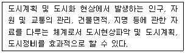
- FM(Facility Management)
- UIS(Urban Information System)
- TIS(Transportation Information System)
- EIS(Environment Information System)
(정답률: 65%)
70. 레스터 자료의 압축방법이 아닌 것은?
- 체인코드(Chain Code)
- 포인트코드(Point Code)
- 런 렝스코드(Run-Length Code)
- 블록코드(Block Code)
(정답률: 55%)
71. 지리정보시스템(GIS) 데이터의 유통과 변환이 가능하도록 데이터의 포맷 등 형식을 동일한 방식으로 규정하는 것은?
- 데이터의 계통화
- 데이터의 표준화
- 데이터의 정렬
- 데이터의 객관화
(정답률: 71%)
72. 지형지물의 검색, 관리 및 재해방지, 물류, 부동산관리 등 지리정보의 다양한 활용을 위하여 지도상의 핵심 지형지물에 부여하는 고유번호를 무엇이라 하는가?
- RFID
- UFID
- 메타데이타
- 도엽번호
(정답률: 53%)
73. 지적도(parcels)에서 면적(area, m2)이 100을 초과하는 대지의 소유자(owner)를 알려고 할 때, SQL(Structured Query Language) 질의문으로 옳은 것은?
- SELECT owner FROM area GT 100 WHERE parcels
- SELECT area GT 100 FROM owner WHERE parcels
- SELECT owner FROM parcels WHERE area ＞ 100
- SELECT parcels FROM owner WHERE area ＞ 100
(정답률: 57%)
74. 지형을 저장하고 표현할 수 있는 데이터 구조 중 라이다(LiDAR) 원시 자료의 데이터 구조를 설명하고 있는 것은?
- 불규칙삼각망(TIN)
- 연속된 선으로 표현되는 등고선
- 인접 지형의 데이터로부터 보관된 자료
- 점(Point) 위치에 대해 데이터 값을 기록
(정답률: 45%)
75. 지리정보시스템(GIS)의 공간 및 속성자료 분석기능 중 여러 가지 다른 종류의 객체를 합쳐서 상위수준의 클래스로 만드는 기능으로써 대축척 지도로부터 소축척 지도를 만드는 과정에도 적용되는 기능은?
- 일반화(generalization)
- 추출(retrieval)
- 분류(classification)
- 중첩(overlay)
(정답률: 37%)
76. 부울(Boolcan) 논리를 적용한 레이어의 중첩에서 그림의 빗금친 부분과 같은 논리연산을 바르게 나타낸 것은?
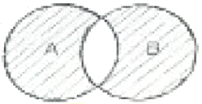
- A AND B
- A OR B
- A XOR B
- A NOT B
(정답률: 66%)
77. 지리정보시스템(GIS)에서 공간자료와 속성자료의 통합해석에 이용되는 다양한 기능에 대한 설명으로 틀린 것은?
- 분류란 자료들을 일정한 기준에 맞추어 결합시키는 과정이다.
- 인접성은 특정한 위치의 주변 영역에 대한 특성을 평가하는데 사용된다.
- 논리적인 중첩은 각각의 레이어에 대한 자료값들의 사칙연산을 의미한다.
- 연결성은 곤강 객체 사이의 연결에 대한 정보로서 서로 연결된 지역의 공간 객체들의 특징을 파악하는 것이다.
(정답률: 42%)
78. 지도투영은 지구의 둥근 표면 전체 도는 일부분을 평면상에 나타내는 것으로 여러 투영법이 개발되었다. 만약 주어진 수치지도의 좌표계가 UTM(Universal Transverse Mercator)이라면, 이 수치지도의 좌표단위는?
- 인치
- 센치미터
- 피트
- 미터
(정답률: 64%)
79. 지리정보시스템(GIS)의 일반적인 자료처리 단계를 순서대로 바르게 나열한 것은?
- 자료의 수치화 – 자료조작 및 관리 – 응용·분석 - 출력
- 자료조작 및 관리 – 자료의 수치화 – 응용·분석 – 출력
- 자료의 수치화 – 응용·분석 – 자료조작 및 관리 - 출력
- 자료조작 및 관리 – 응용·분석 – 자료의 수치화 – 출력
(정답률: 48%)
80. 위성 모형을 통하여 얻을 수 있는 공간분석으로 적절하지 않은 것은?
- 중첩 분석
- 인접성 분석
- 네트워크 분석
- 주성분 분석
(정답률: 57%)
5과목: 측량학
81. 삼각망의 정확도가 높은 순서대로 옳게 나열된 것은?
- 단열 삼각망 ＞ 유심 삼각망 ＞ 사변형 삼각망
- 사변형 삼각망 ＞ 유심 삼각망 ＞ 단열 삼각망
- 유심 삼각망 ＞ 단열 삼각망 ＞ 사변형 삼각망
- 사변형 삼각망 ＞ 단열 삼각망 ＞ 유심 삼각망
(정답률: 64%)
82. 다음의 관측값은 동일한 각(∠x)을 3대의 각관측 장비를 이용하여 관측한 결과이다. 이 결과에 따른 각(∠x)의 최확값은?
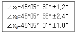
- 45°⑤‘ 11“
- 45°⑤’ 21”
- 45°⑤‘ 31“
- 45°⑤’ 41”
(정답률: 45%)
83. 하천, 항만, 해양 등의 심천을 나타내는 데 측점에 숫자로 기입하여 고저를 표시하는 지형의 표시방법은?
- 점고법
- 영선법
- 음영법
- 등고선법
(정답률: 58%)
84. 토털스테이션(TS)을 이용하여 100m 떨어진 위치의 측점을 각 관측 하였을 때 6“의 관측오차가 발생하였다면 측점의 위치오차는?
- 2.4mm
- 2.9mm
- 3.6mm
- 4.2mm
(정답률: 42%)
85. 큰 계곡이나 하천을 횡단하여 수준측량을 할 경우에 사용하는 수준측량의 방법으로 가장 알맞은 것은?
- 간접 수준측량
- 교호 수준측량
- 시거 수준측량
- 종단 수준측량
(정답률: 59%)
86. B, C, D점에서 그림과 같이 ①~④의 각을 관측하였다. BC의 거리가 120.00m일 때, CD의 거리는?
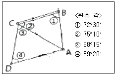
- 197.1m
- 198.3m
- 202.4m
- 215.3m
(정답률: 37%)
87. 콘크리트 구조물의 부피를 계산하기 위해 가로(I), 세로(w), 높이(h)를 측정한 결과가 I=30±0.02m, w=15±0.03m, h=20±0.⑤m일 때 구조물의 부피 오차는?
- ±0.27m3
- ±1.25m3
- ±6.82m3
- ±29.43m3
(정답률: 24%)
88. 자동레벨의 조정 조건이 아닌 것은?
- 원형기포관의 접평면이 연직축과 직교하여야 한다.
- 십자횡선이 수평이어야 한다.
- 시준선이 항상 수평이어야 한다.
- 망원경 기포관축이 시준선과 수직하여야 한다.
(정답률: 37%)
89. 등고선에 관한 설명으로 옳지 않은 것은?
- 간곡선은 주곡선 간격의 1/2로 표시하며, 주곡선만으로는 지모의 상태를 명시할 수 없는 장소에 가는 파선으로 나타낸다.
- 조곡선은 간곡선 간격의 1/2로 표시하는데, 표현이 부족한 곳에 가는 실선으로 나타낸다.
- 계곡선은 지모의 상태를 파악하고 등고선의 고저치를 쉽게 판독할 수 있도록 주곡선 5개마다 굵은 실선으로 나타낸다.
- 주곡선은 지형을 나타내는 기본이 되는 곡선으로 간격은 축척에 따라 다르게 결정된다.
(정답률: 50%)
90. 거리를 측정할 때에 발생하는 오차 중에서 정오차가 아닌 것은?
- 표준온도와 관측 시 온도 차에 의해 발생하는 오차
- 표준줄자와의 길이 차이에 의하여 발생하는 오차
- 눈금을 잘못 읽었을 때 발생하는 오차
- 줄자의 처짐(sag)으로 발생하는 오차
(정답률: 66%)
91. 광파기(거리측정기)의 기계정수를 검사하기 위해 아래 그림과 같이 거리를 측정하였다. 기계정수 K를 구하는 방법은?
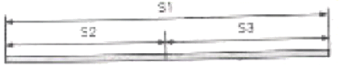
- K=S1-(S2+S3)
- K=(S1+S2+S3)/S1
- K=(S2+S3)/S1
- K=S1/(S2+S2)
(정답률: 55%)
92. 기지의 수준점 A, B간에 수준측량을 실시하여 (1)점을 신설하고 표와 같은 관측결과를 얻었다. (1)점의 지반고는? (단, A점 지반고 = 135.674m, B점 지반고 = 143.512m)
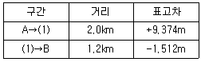
- 145.033m
- 145.036m
- 145.044m
- 145.048m
(정답률: 30%)
93. 축척 1:50000 지형도에서 거리가 8.0cm인 두 지점이 다른 지형도 상에서는 거리가 28cm이었다면 이 지형도의 축척은?
- 약 1:5000
- 약 1:7000
- 약 1:10000
- 약 1:14000
(정답률: 50%)
94. 길이 50m인 줄자를 사용하여 1250m를 관측하였다. 50m 관측에 대한 오차가 ±5mm라면 전체 거리에서 발생하는 오차는?
- ±10mm
- ±20mm
- ±25mm
- ±30mm
(정답률: 51%)
95. 측량업종은 크게 측지측량업, 지적측량업, 그 박에 항공촬영, 지도제작 등 대통령령으로 정하는 업종으로 구분할 수 있다. 다음 중 항공촬영, 지도제작 등 대통령령으로 정하는 업종에 해당되지 않는 것은?
- 일반측량업
- 수치지도제작업
- 수로조사업
- 지하시설물측량업
(정답률: 36%)
96. 우리나라의 측량기준으로 세계측지계에 따른 직각좌표에 대한 설명으로 틀린 것은?
- 서부좌표계, 중부과표계, 동부좌표계, 동해좌표계가 있다.
- 각 좌표계에서의 직가좌표는 가우스상사 이중투영법으로 표시한다.
- X축은 좌표계 원점의 자오선에 일치한다.
- 투영원점의 가산 수치는 X(N) 600000m, Y(E) 200000m이다.
(정답률: 47%)
97. 국가공간정보 기본법에서 사용하는 용어 중 공간정보데이터베이스의 정의로 옳은 것은?
- 공간정보를 효과적으로 수집·저장·가공·분석·표현할 수 있도록 서로 유기적으로 연계된 컴퓨터의 하드웨어, 소프트웨어 및 인적자원의 결합체를 말한다.
- 공간정보를 효율적으로 관리 및 활용하기 위하여 자연적 또는 인공적 객체에 부여하는 공간정보의 식별체계를 말한다.
- 공간정보를 체계적으로 할 수 있도록 가공한 정보의 집합체를 말한다.
- 지상·지하·수상·수증 등 공간상에 존재하는 자연적 또는 인공적인 객체에 대한 위치정보 및 이와 관련된 공간적 인지 및 의사결정에 필요한 정보를 말한다.
(정답률: 37%)
98. 공공측량시행자가 공공측량 작업계획서를 제출해야 하는 시기에 대한 기준은?
- 공공측량을 하기 3일 전
- 공공측량을 하기 10일 전
- 공공측량을 하기 30일 전
- 공공측량을 하기 90일 전
(정답률: 58%)
99. 측량기준점의 구분에 해당되지 않는 것은?
- 국가기준점
- 지적기준점
- 공공기준점
- 연안기준점
(정답률: 53%)
100. 아래와 같은 기본측량성과의 국외 반출 금지 조항에서 밑줄 친 부분에 해당되지 않는 것은?
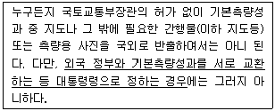
- 대한민국 정부와 외국 정부 간에 체결된 협정 또는 합의에 따라 기본측량성과를 상호 교환하는 경우
- 축척 5천분의 1이상의 대축척으로 제작된 지도를 국외로 반출하는 경우
- 정부를 대표하여 외국 정부와 교섭하거나 국제회의 또는 국제기구에 참석하는 자가 자료로 사용하기 위하여 반출하는 경우
- 관광객의 유치와 관광시설의 홍보를 목적으로 제작하여 반출하는 경우
(정답률: 66%)